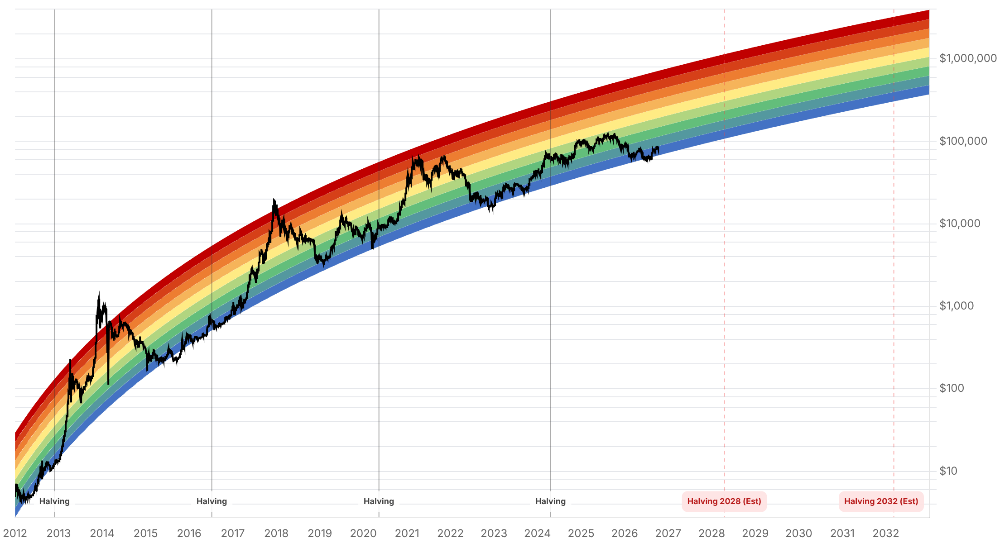

Reporte financiero
BTC cotiza en USD 84.018,32 en vivo (07:25 UTC), +0,41% frente al cierre de ayer (USD 83.673,01) -rompe al alza la banda de estabilización de USD 82.000-83.000 que sostenía desde el 9 de octubre y entra de lleno en la zona de resistencia USD 83.400-85.400 señalada en ediciones anteriores, sin que se haya encontrado un catalizador de precio puntual para el movimiento-. El Fear & Greed Index subió de forma notable, de 61 a 69, su salto más fuerte en varios días y acompaña la fortaleza del precio. En el frente Tether/Cantor Fitzgerald la novedad es que, tras el pedido de registros de Blumenthal del 8 de octubre (plazo 23 de octubre), Tether salió a responder públicamente: la empresa afirma haber colaborado con las autoridades y haber ayudado a congelar cerca de USD 550M en USDT vinculado a Irán durante este año -la primera respuesta pública de alguna de las dos partes desde que se conoció el pedido, aunque ni Tether ni Cantor Fitzgerald dieron todavía una respuesta sustantiva a los puntos específicos de la carta-. Esto se suma al dato ya conocido de que el informe de la subcomisión del Senado (de fines de septiembre) encontró que el 84% de 846 wallets vinculadas a Irán transaban mayormente en USDT, el sustento original de la pesquisa. No hay novedades verificables en el resto de los ejes: los flujos de ETF spot siguen sin dato público para el 10 y 11 de octubre (Farside y TFTC solo tienen confirmado el +USD 21,1M del 9 de octubre, ya reportado ayer); el outlook de la Clarity Act no tiene desarrollo nuevo desde el deterioro reportado ayer (cloture fallido de septiembre, análisis de Orrick, ~30-32% en Polymarket); las reglas de ETF locales de Bitcoin/Ether en Tailandia siguen apuntando a su entrada en vigencia el 16 de octubre sin fondos confirmados para listar todavía; y no se encontró una nueva compra de Strategy/Saylor desde la del 5 de octubre ni novedades sobre la tregua Trump-Irán. El catalizador más próximo sigue siendo el IPC de septiembre de EE.UU., ahora a solo 2 días (14 de octubre), con el consenso de ~3,6-3,7% interanual sin cambios.
Tras tres días de estabilización en USD 82.000-83.000 (reportados en ediciones anteriores), el precio subió a USD 84.018,32 en vivo (+0,41% frente al cierre de ayer de USD 83.673,01), dentro del rango intradía USD 83.418,74-84.230,83. Esto coloca al precio dentro de la zona de resistencia técnica de USD 83.400-85.400 señalada en reportes previos, sin que la investigación de hoy haya encontrado un catalizador de noticias específico que explique el movimiento -podría tratarse de flujo de cobertura de cortos o simplemente continuidad del alivio geopolítico del 8 de octubre, pero no hay confirmación de ninguna fuente consultada.
El índice de sentimiento subió 8 puntos en un día, revirtiendo la pérdida de fuerza reportada ayer (de 64 a 61) y volviendo a zona 'Greed' con más convicción. El salto es consistente con la ruptura de precio hacia la zona de resistencia, aunque un solo día de alza en el índice no permite todavía hablar de un cambio de régimen de sentimiento.
Desde que se conoció el 8 de octubre el pedido de registros del senador Blumenthal al CEO de Cantor Fitzgerald (respuesta esperada el 23 de octubre), ninguna de las dos partes había respondido públicamente -así se dejó constancia en el reporte de ayer-. La novedad de hoy es que Tether sí emitió una respuesta general: la empresa dice haber cooperado con las fuerzas del orden y haber ayudado a congelar cerca de USD 550M en USDT vinculado a transacciones con Irán durante este año. Es una respuesta de posicionamiento general, no una respuesta punto por punto a los pedidos específicos de la carta de Blumenthal, y Cantor Fitzgerald todavía no se pronunció. Esto se suma al dato de fondo ya conocido: el informe de la subcomisión del Senado de fines de septiembre encontró que el 84% de 846 wallets vinculadas a Irán transaban mayormente en USDT.
No se encontró dato público de flujos de ETF para el 10 ni el 11 de octubre en Farside ni TFTC -el último dato confirmado sigue siendo la entrada neta de USD 21,1M del 9 de octubre, ya reportada ayer-. Tampoco hay desarrollo nuevo en el outlook de la Clarity Act (sigue el deterioro ya reportado: cloture fallido de septiembre, análisis de octubre de Orrick, ~30-32% en Polymarket), en el cronograma de ETF locales de Bitcoin/Ether en Tailandia (vigencia el 16 de octubre, ningún fondo confirmado para listar todavía), en la posición de Strategy/Saylor (última compra confirmada el 5 de octubre) ni en la tregua Trump-Irán anunciada el 8 de octubre. Se reportan solo para dejar constancia de que se revisó cada eje, no porque haya novedad.
| Periodo | Valor |
|---|---|
| 6 oct | 85557.56 |
| 7 oct | 83275.93 |
| 8 oct | 81676.34 |
| 9 oct | 82546.32 |
| 10 oct | 82912.23 |
| 11 oct | 83679.47 |
| 12 oct (en vivo) | 84018.32 |
| Periodo | Valor |
|---|---|
| Fear & Greed | 69 |

El precio rompió la banda USD 82.000-83.000 y entra en la zona de resistencia USD 83.400-85.400 señalada en ediciones anteriores -esos niveles técnicos no tienen actualización nueva hoy (no se encontraron datos frescos de liquidaciones de CoinGlass) y se mantienen como referencia para evaluar si el movimiento de hoy logra sostenerse o es rechazado-. El catalizador más próximo sigue siendo el IPC de septiembre, ahora a solo 2 días (14 de octubre), con el consenso (~3,6-3,7% interanual) sin cambios. Los flujos de ETF siguen sin dato público para el 10 y 11 de octubre, por lo que la lectura de continuidad de la entrada neta del 9 de octubre (+USD 21,1M) sigue pendiente de confirmación.
Sin cambios desde ayer: el deterioro del outlook de la Clarity Act (cloture fallido, análisis de Orrick, ~30-32% en Polymarket) sigue debilitando la pata alcista del escenario de QCP Capital hacia USD 100.000, sin alterar su rango base de USD 80.000-90.000 para el Q4. Tailandia mantiene su canal institucional acotado (ETF locales desde el 16 de octubre, sin fondos confirmados aún). La escalada regulatoria sobre Tether suma hoy la primera respuesta pública de la empresa (defensa general sobre congelamiento de fondos vinculados a Irán), pero sigue sin una respuesta punto por punto ni una acción concreta de DOJ/Tesoro -sigue siendo un riesgo de cola a monitorear hacia el 23 de octubre, no una señal operativa.
Sin cambios en los objetivos de precio de largo plazo ya reportados en ediciones anteriores (Citigroup, Bernstein, Standard Chartered, Tom Lee, NYDIG, Armstrong) ni en el trasfondo regulatorio de fondo más allá de lo ya detallado arriba. No se encontró desarrollo nuevo y verificable en otros frentes hoy.
El movimiento de hoy entra en la zona de resistencia USD 83.400-85.400 sin que la investigación encontrara una noticia puntual que lo explique -podría ser flujo técnico (cobertura de cortos) más que convicción de compra nueva. Esperar confirmación con los datos de ETF del 10-11 de octubre (todavía no publicados) antes de tratarlo como una señal direccional.
Sin cambios desde ayer: ese escenario depende del avance de la Clarity Act, cuyo outlook sigue deteriorado (cloture fallido, análisis de Orrick, ~30-32% en Polymarket). El rango base de QCP (USD 80.000-90.000) no cambia.
La defensa pública de Tether (congelamiento de ~USD 550M en USDT vinculado a Irán) es una respuesta de posicionamiento general, no una respuesta punto por punto a los pedidos específicos de Blumenthal a Cantor Fitzgerald, cuyo plazo vence el 23 de octubre. Es un riesgo de cola a vigilar hacia esa fecha, no una señal operativa hoy.